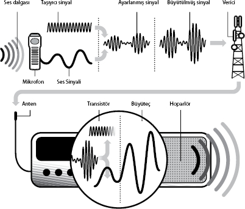

Radyo Dalgaları Nasıl İletilir?
Radyo dalgalarını düzgün iletmek için düşük frekanslı ses dalgaları sabit bir güce (genlik) ve yüksek frekansa sahip taşıyıcı dalgalarla birleştirilir. Genlik modülasyonunda ses sinyalinin değişken genliği taşıyıcı sinyalin genliğini ayarlar ama frekansı ayarlamaz (aşağıya bakınız). Frekans modülasyonunda ise ses sinyalinin değişken frekansı taşıyıcı sinyalin frekansını değiştirir ama genliğini değiştirmez.
Ses hava iniş çıkışlarının dalgaları halinde bir mikrofona girdiğinde radyo dalgaları başlar. Ses dalgalarındaki farklı basınçlar bir elektrikli ses sinyaline çevrilir, sonra bu sinyal "yükseltilerek" (veya kuvvetlendirilerek) vericiye gönderilir, orada sinyal anten içindeki elektronları hareket etmeye zorlayarak elektromanyetik dalgalar üretir.
Daha sonra bu dalgalar, belli bir frekansa göre ayarlanmış bir ayar devresi olan radyoya bağlı bir anten tarafından toplanır. Transistör, ayarlanmış sinyali taşıyıcı sinyal ve ses sinyaline ayırır. Sonra yükselteç tarafından kuvvetlendirilen ses sinyali hoparlöre taşınır. Sinyal diyaframın (hoparlörün önünü kapatan ince esnek disk) titreşerek ses dalgaları üretmesini sağlar.
